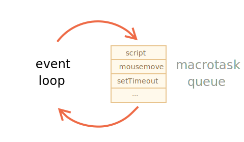
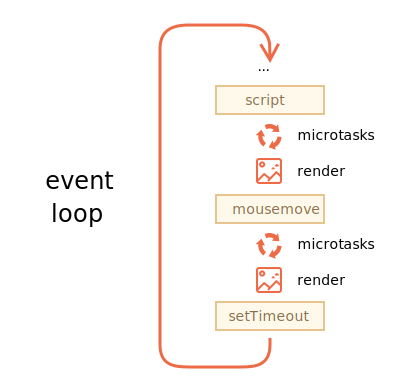

浏览器中 JavaScript 的执行流程和 Node.js 中的流程都是基于 事件循环 的。
理解事件循环的工作方式对于代码优化很重要，有时对于正确的架构也很重要。
在本章中，我们首先介绍有关事物工作方式的理论细节，然后介绍该知识的实际应用。
事件循环 的概念非常简单。它是一个在 JavaScript 引擎等待任务，执行任务和进入休眠状态等待更多任务这几个状态之间转换的无限循环。
引擎的一般算法：
当我们浏览一个网页时就是上述这种形式。JavaScript 引擎大多数时候不执行任何操作，仅在脚本/处理程序/事件激活时执行。
任务示例：
<script src="..."> 加载完成时，任务就是执行它。mousemove 事件和执行处理程序。setTimeout 时间到达时，任务就是执行其回调。设置任务 —— 引擎处理它们 —— 然后等待更多任务（即休眠，几乎不消耗 CPU 资源）。
一个任务到来时，引擎可能正处于繁忙状态，那么这个任务就会被排入队列。
多个任务组成了一个队列，即所谓的“宏任务队列”（v8 术语）：

例如，当引擎正在忙于执行一段 script 时，用户可能会移动鼠标而产生 mousemove 事件，setTimeout 或许也刚好到期，以及其他任务，这些任务组成了一个队列，如上图所示。
队列中的任务基于“先进先出”的原则执行。当浏览器引擎执行完 script 后，它会处理 mousemove 事件，然后处理 setTimeout 处理程序，依此类推。
到目前为止，很简单，对吧？
两个细节：
以上是理论知识。现在，让我们来看看如何应用这些知识。
假设我们有一个 CPU 过载任务。
例如，语法高亮（用来给本页面中的示例代码着色）是相当耗费 CPU 资源的任务。为了高亮显示代码，它执行分析，创建很多着了色的元素，然后将它们添加到文档中 —— 对于文本量大的文档来说，需要耗费很长时间。
当引擎忙于语法高亮时，它就无法处理其他 DOM 相关的工作，例如处理用户事件等。它甚至可能会导致浏览器“中断（hiccup）”甚至“挂起（hang）”一段时间，这是不可接受的。
我们可以通过将大任务拆分成多个小任务来避免这个问题。高亮显示前 100 行，然后使用 setTimeout（延时参数为 0）来安排（schedule）后 100 行的高亮显示，依此类推。
为了演示这种方法，简单起见，让我们写一个从 1 数到 1000000000 的函数，而不写文本高亮。
如果你运行下面这段代码，你会看到引擎会“挂起”一段时间。对于服务端 JS 来说这显而易见，并且如果你在浏览器中运行它，尝试点击页面上其他按钮时，你会发现在计数结束之前不会处理其他事件。
let i = 0;
let start = Date.now();
function count() {
// 做一个繁重的任务
for (let j = 0; j < 1e9; j++) {
i++;
}
alert("Done in " + (Date.now() - start) + 'ms');
}
count();浏览器甚至可能会显示一个“脚本执行时间过长”的警告。
让我们使用嵌套的 setTimeout 调用来拆分这个任务：
let i = 0;
let start = Date.now();
function count() {
// 做繁重的任务的一部分 (*)
do {
i++;
} while (i % 1e6 != 0);
if (i == 1e9) {
alert("Done in " + (Date.now() - start) + 'ms');
} else {
setTimeout(count); // 安排（schedule）新的调用 (**)
}
}
count();现在，浏览器界面在“计数”过程中可以正常使用。
单次执行 count 会完成工作 (*) 的一部分，然后根据需要重新安排（schedule）自身的执行 (**)：
i=1...1000000。i=1000001..2000000。现在，如果在引擎忙于执行第一部分时出现了一个新的副任务（例如 onclick 事件），则该任务会被排入队列，然后在第一部分执行结束时，并在下一部分开始执行前，会执行该副任务。周期性地在两次 count 执行期间返回事件循环，这为 JavaScript 引擎提供了足够的“空气”来执行其他操作，以响应其他的用户行为。
值得注意的是这两种变体 —— 是否使用了 setTimeout 对任务进行拆分 —— 在执行速度上是相当的。在执行计数的总耗时上没有多少差异。
为了使两者耗时更接近，让我们来做一个改进。
我们将要把调度（scheduling）移动到 count() 的开头：
let i = 0;
let start = Date.now();
function count() {
// 将调度（scheduling）移动到开头
if (i < 1e9 - 1e6) {
setTimeout(count); // 安排（schedule）新的调用
}
do {
i++;
} while (i % 1e6 != 0);
if (i == 1e9) {
alert("Done in " + (Date.now() - start) + 'ms');
}
}
count();现在，当我们开始调用 count() 时，会看到我们需要对 count() 进行更多调用，我们就会在工作前立即安排（schedule）它。
如果你运行它，你很容易注意到它花费的时间明显减少了。
为什么？
这很简单：你应该还记得，多个嵌套的 setTimeout 调用在浏览器中的最小延迟为 4ms。即使我们设置了 0，但还是 4ms（或者更久一些）。所以我们安排（schedule）得越早，运行速度也就越快。
最后，我们将一个繁重的任务拆分成了几部分，现在它不会阻塞用户界面了。而且其总耗时并不会长很多。
对浏览器脚本中的过载型任务进行拆分的另一个好处是，我们可以显示进度指示。
通常，浏览器会在当前执行的代码完成后进行渲染（render）。任务的执行是否会花费很长时间对此没有影响。对 DOM 的更改只有在任务完成后才会被绘制。
从一方面讲，这非常好，因为我们的函数可能会创建很多元素，将它们一个接一个地插入到文档中，并更改其样式 —— 访问者不会看到任何未完成的“中间态”内容。很重要，对吧？
这是一个示例，对 i 的更改在该函数完成前不会显示出来，所以我们将只会看到最后的值：
<div id="progress"></div>
<script>
function count() {
for (let i = 0; i < 1e6; i++) {
i++;
progress.innerHTML = i;
}
}
count();
</script>……但是我们也可能想在任务执行期间展示一些东西，例如进度条。
如果我们使用 setTimeout 将繁重的任务拆分成几部分，那么变化就会被在它们之间绘制出来。
这看起来更好看：
<div id="progress"></div>
<script>
let i = 0;
function count() {
// 做繁重的任务的一部分 (*)
do {
i++;
progress.innerHTML = i;
} while (i % 1e3 != 0);
if (i < 1e7) {
setTimeout(count);
}
}
count();
</script>现在 div 显示了 i 的值的增长，这就是进度条的一种。
在事件处理程序中，我们可能会决定推迟某些行为，直到事件冒泡并在所有级别上得到处理后。我们可以通过将该代码包装到零延迟的 setTimeout 中来做到这一点。
在 info:dispatch-events 一章中，我们看到过这样一个例子：自定义事件 menu-open 被在 setTimeout 中分派（dispatched），所以它在 click 事件被处理完成之后发生。
menu.onclick = function() {
// ...
// 创建一个具有被点击的菜单项的数据的自定义事件
let customEvent = new CustomEvent("menu-open", {
bubbles: true
});
// 异步分派（dispatch）自定义事件
setTimeout(() => menu.dispatchEvent(customEvent));
};除了本章中所讲的 宏任务（macrotask） 外，还有在 info:microtask-queue 一章中提到的 微任务（microtask）。
微任务仅来自于我们的代码。它们通常是由 promise 创建的：对 .then/catch/finally 处理程序的执行会成为微任务。微任务也被用于 await 的“幕后”，因为它是 promise 处理的另一种形式。
还有一个特殊的函数 queueMicrotask(func)，它对 func 进行排队，以在微任务队列中执行。
每个宏任务之后，引擎会立即执行微任务队列中的所有任务，然后再执行其他的宏任务，或渲染，或进行其他任何操作。
例如，看看下面这个示例：
setTimeout(() => alert("timeout"));
Promise.resolve()
.then(() => alert("promise"));
alert("code");这里的执行顺序是怎样的？
code 首先显示，因为它是常规的同步调用。promise 第二个出现，因为 then 会通过微任务队列，并在当前代码之后执行。timeout 最后显示，因为它是一个宏任务。更详细的事件循环图示如下（顺序是从上到下，即：首先是脚本，然后是微任务，渲染等）：

微任务会在执行任何其他事件处理，或渲染，或执行任何其他宏任务之前完成。
这很重要，因为它确保了微任务之间的应用程序环境基本相同（没有鼠标坐标更改，没有新的网络数据等）。
如果我们想要异步执行（在当前代码之后）一个函数，但是要在更改被渲染或新事件被处理之前执行，那么我们可以使用 queueMicrotask 来对其进行安排（schedule）。
这是一个与前面那个例子类似的，带有“计数进度条”的示例，但是它使用了 queueMicrotask 而不是 setTimeout。你可以看到它在最后才渲染。就像写的是同步代码一样：
<div id="progress"></div>
<script>
let i = 0;
function count() {
// 做繁重的任务的一部分 (*)
do {
i++;
progress.innerHTML = i;
} while (i % 1e3 != 0);
if (i < 1e6) {
*!*
queueMicrotask(count);
*/!*
}
}
count();
</script>事件循环的更详细的算法（尽管与 规范 相比仍然是简化过的）：
安排（schedule）一个新的 宏任务：
setTimeout(f)。它可被用于将繁重的计算任务拆分成多个部分，以使浏览器能够对用户事件作出反应，并在任务的各部分之间显示任务进度。
此外，也被用于在事件处理程序中，将一个行为（action）安排（schedule）在事件被完全处理（冒泡完成）后。
安排一个新的 微任务：
queueMicrotask(f)。在微任务之间没有 UI 或网络事件的处理：它们一个立即接一个地执行。
所以，我们可以使用 queueMicrotask 来在保持环境状态一致的情况下，异步地执行一个函数。
对于不应该阻塞事件循环的耗时长的繁重计算任务，我们可以使用 [Web Workers](https://html.spec.whatwg.org/multipage/workers.html)。
这是在另一个并行线程中运行代码的方式。
Web Workers 可以与主线程交换消息，但是它们具有自己的变量和事件循环。
Web Workers 没有访问 DOM 的权限，因此，它们对于同时使用多个 CPU 内核的计算非常有用。